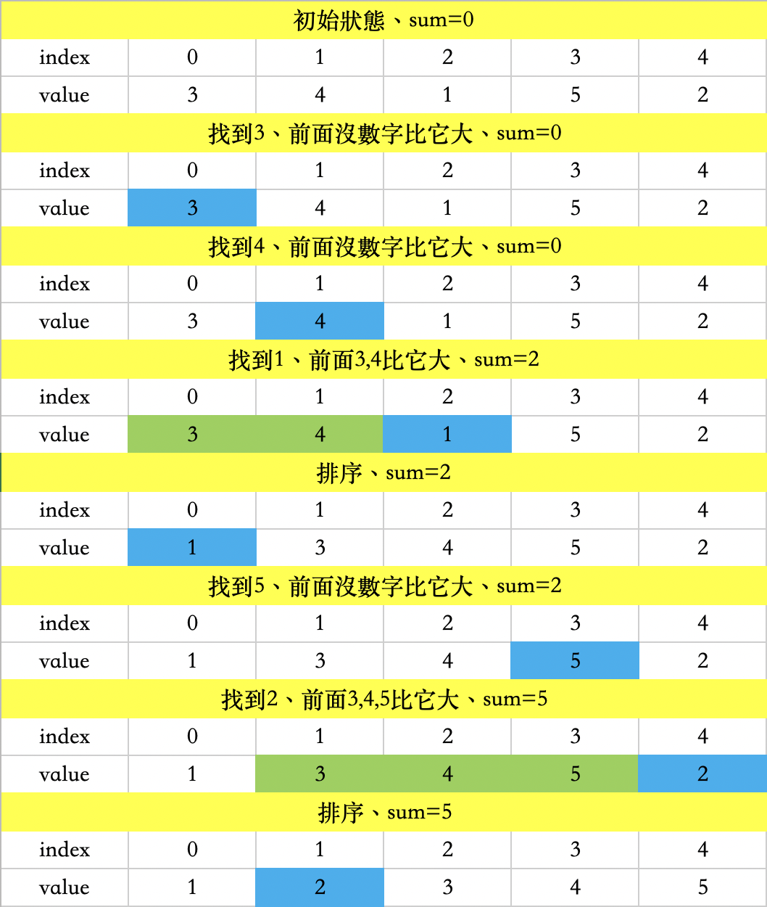
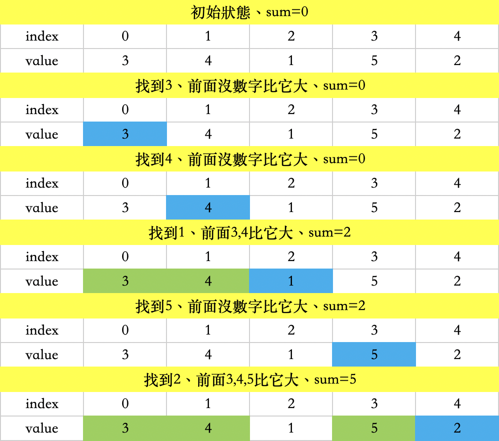

這篇主要是記錄一些練習排序 的題目
這題很明顯的就是告訴我們一堆排序的規則，排序完就印出來，然後要注意輸入的ab可能為負，如果用C、C++，取得的餘數也會因此為負，所以我會先變成絕對值，這樣比較好處理。
1
2
3
4
5
6
7
8
9
10
11
12
13
14
15
16
17
18
19
20
21
22
23
24
25
26
27
28
29
30
31
32
33
34
35
| #include<bits/stdc++.h>
using namespace std;
int num[10005],n,m;
bool cmp(int a, int b){
int am = abs(a%2),bm = abs(b%2);
if(a%m != b%m){return a%m < b%m;}
if(am != bm){return a%2;}
if(am && bm){return a > b;}
return a < b;
}
int main(){
int i;
while(cin>>n>>m && n+m){
for(i=0;i<n;i++){cin>>num[i];}
sort(num, num+n, cmp);
cout<<n<<" "<<m<<"\n";
for(i=0;i<n;i++){
cout<<num[i]<<"\n";
}
}
cout<<"0 0\n";
return 0;
}
|
在討論區裡，可以看到有些人是先計次數，再排序，而我的作法是只算前面有幾個比自己大，然後把所有的結果相加印出，省下了排序的步驟。以下將證明我的想法可行：
我們令一陣列裡有{3,4,1,5,2}這五個數，且用sum表示交換次數。
圖一：討論區普遍的做法

圖二：我的做法

1
2
3
4
5
6
7
8
9
10
11
12
13
14
15
16
17
18
19
20
21
| #include<stdio.h>
int main(){
int n,i,j,num[1001];
while(scanf("%d",&n)!=EOF){
int chg=0;
for(i=0;i<n;i++){scanf("%d",&num[i]);}
for(i=1;i<n;i++){
for(j=i-1;j>=0;j--){
if(num[j] > num[i]){chg++;}
}
}
printf("Minimum exchange operations : %d\n",chg);
}
return 0;
}
|
封面圖源：Pixiv